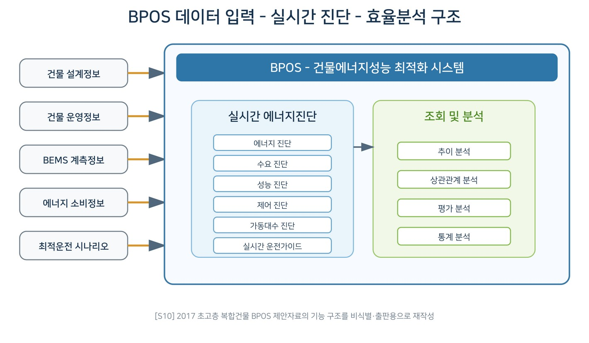

데이터로 찾는 산업·건물 에너지절감 실무 — 95쪽
기존 BEMS 데이터를 이용해 설계조건과 실제 운전상태의 차이를 분석하고, 계측데이터 정합성 검증, 열원·공조설비 성능분석, 실시간 운전가이드와 계 절별 운전최적화를 연계하는 Continuous Commissioning 제안 사례다. 그림 21-1. BPOS 데이터 입력-실시간 진단-효율분석 구조. [S10] 2017 초고층 복합건물 BPOS 제안자료를 고객 식별정보 제거 후 출판용 도식으로 재작성.

인쇄본 기준 p. 95